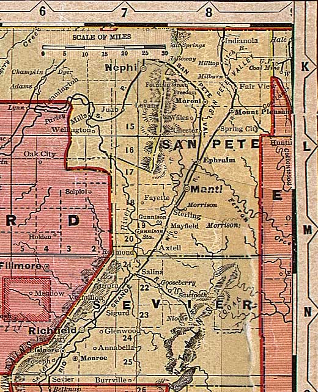

Sanpete and Sevier Counties, Utah, ca. 1908
From "Deseret Evening News New Home Library Wall Chart" (reprinted with permission)
Utah County
All of Utah
Juab
County
Millard
County

Carbon
County
Emery
County
Piute and Wayne Counties